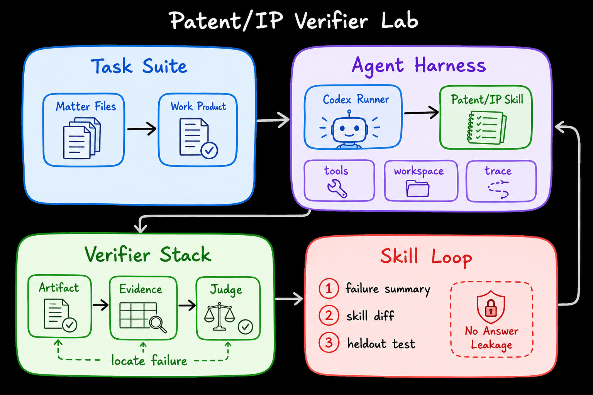
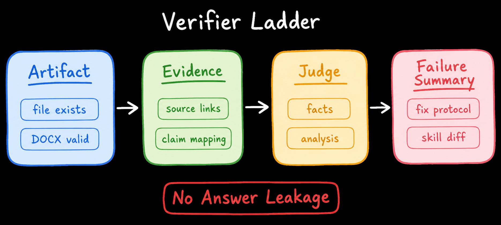
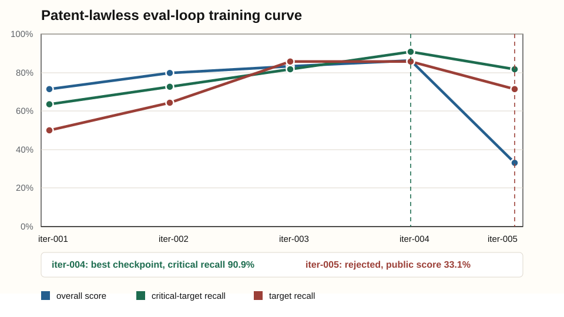

商品到专利的启发式学习
一个以 verifier 为中心的商品专利侵权风险筛查实验
作者：谷子昂。本文是一份面向智慧芽技术场景的技术报告草稿，核心问题是：当专利检索任务被做成可运行、可审计、可比较的环境以后，Agent Harness 应该如何围绕 verifier 学习？
Contents
- The Anomaly：异常现象
- Heuristic Learning：不是更长的 prompt，而是可维护的工作系统
- Why Heuristic Learning Did Not Take Off Earlier：为什么以前很难
- How Heuristic Learning Does Continual Evaluation：法律场景里的持续评估
- What Makes a Good Legal Verifier：好的 verifier 是什么
- The Complexity of Heuristic Legal Systems：耦合复杂度
- The Next Paradigm：一个更窄但更可落地的范式
- Disclaimer
- Acknowledgements
- Citation
- Appendix: Experiment Notes and Reproduction
Continual Learning 的老问题是 catastrophic forgetting：学到新东西以后，旧能力可能被覆盖。法律 Agent 里也有同样的问题，只是它不总是表现为模型权重遗忘。一个系统今天为了商品图片检索加了一条“相似结构也要搜”的规则，明天可能把泛相似专利误报成高风险；一个 validator 今天鼓励多列专利号，明天可能让证据链变空；一个 Skill 越写越长，Agent 可能开始服从 checklist，而不是服从产品证据。
本文的主角是一个更窄、更适合专利智能场景 demo 的 Patent/IP Verifier Lab。我们不把法律任务做成单句问答，而是把它做成“产品证据输入 + 专利侵权风险筛查 + 分层评价 + 可回放 trace”的环境。这里真正要验证的不是模型能否写出一段漂亮分析，而是“从商品图片或商品页面出发，发现可能约束该商品的发明/实用专利，并形成可复核的风险候选”这件事，能否被组织成可学习的工程系统。
对智慧芽这类专利智能场景，更核心的问题是：如何把“看一个商品，做发明/实用专利侵权风险筛查”做成可验证环境？输入可能只有一张商品图、一个 Amazon 页面、一段产品描述或一个型号；输出不是最终侵权结论，而是一组带证据链的风险候选。HIGH_RISK 与 RELATED 是这个任务的结果口径和评分口径：前者表示需要优先复核的强风险候选，后者表示相关但证据不足以进入强风险的上下文候选。至于锁定产品身份、区分设计与发明/实用、比较 claim/status、检查 family/counterpart，这些都不是任务本身，而是为了让风险筛查可信的方法。本文要展示的原创部分，就是围绕这条产品到专利的证据链设计 Agent Harness、Verifier Stack 和 Skill Loop。
我的核心判断是：法律 Agent eval 的下一个单位不是 model answer，而是 verifier-centered harness。Verifier 不只是终点评分器，它定义环境边界、产物契约、可学习失败信号和反泄漏规则。换句话说，在严格法律任务里，verifier is the environment。
Harvey LAB 可以作为这个方向的背景参考：它把 legal agent benchmark 从短问答推进到带材料、带输出、带专家 rubric 的长任务评估。本文借用的是这种“法律 agent 要按可复核结果评估”的 benchmark 思路；但本文实验结果不来自 Harvey LAB，而来自我们自己构建的 patent-lawless 专利检索数据集。
# The Anomaly：异常现象
这份 demo 里第一条让我停下来的观察不是“模型不会做法律”，而是“模型能做出看起来像法律工作的东西，但失败原因经常不在法律知识本身”。在专利检索场景里，Agent 可以读产品页面、产品图片、专利文本和 Google Patents 记录，也可以生成看起来完整的检索报告；但如果它没有锁定产品身份、没有区分发明/实用专利与设计专利、没有检查 claim/status/family bridge，这个结果仍然可能不可用。
但这并不等于任务成功。这个任务的失败常常长这样：商品图里有一个结构模块，Agent 却把视觉相似的品牌页面当成同一产品；页面没有 patent marking，Agent 就直接输出 NONE；找到的是设计专利，却拿它替代发明/实用专利；搜到一个标题相似的专利，却没有比较 independent claim、法律状态、assignee / inventor bridge 和产品机制。结果看起来像“专利列表”，实际无法支持风险判断。
这些失败很像 coding agent 里的测试失败。一个 coding agent 可能知道“大概怎么修 bug”，但如果没有复现脚本、单元测试、日志、回放和 regression gate，它的改进不会稳定。法律 Agent 也一样。我们不该只问模型是否“懂专利”，还要问它是否处在一个能验证、能回放、能定位失败的工作环境里。
所以异常现象可以更尖锐地说：产品到专利的输出不是一串 patent numbers，而是一套可审查的证据协议。HIGH_RISK 不是“技术上看着像”，它至少要说明 exact product、owner/assignee、专利类型、claim/status、family/counterpart 和 source evidence 如何连起来。只要 verifier 不能检查这套协议，Agent 就很容易学会“像专利检索报告一样写”，而不是学会“把一个商品的真实专利风险找出来”。

Figure 1. Patent/IP Verifier Lab：任务套件输入商品图片、商品页面和产品描述，Codex Runner 在 Agent Harness 内调用 Patent/IP Skill，输出 HIGH_RISK / RELATED patent identifiers 与 trace，Verifier Stack 定位 product lock、evidence、bucket 三层失败，Skill Loop 只把 answer-blind 的失败摘要写回 Skill。
# Heuristic Learning：不是更长的 prompt，而是可维护的工作系统
在 Learning Beyond Gradients 里，Heuristic Learning 的关键不是“手写规则比神经网络更聪明”，而是学习对象变了：被持续更新的不一定是模型参数，也可以是一个由 coding agent 维护的软件系统。这个系统有 state、action、feedback、memory、tests、records 和 update path。单条 rule 不是系统；只有当规则、反馈、历史和下一轮更新路径连起来时，它才变成 Heuristic System。
放到 Patent/IP 场景里，这个 Heuristic System 不是一个 policy.py，而是一套可维护的专利工作系统。
| 轴 | Deep RL | 法律 Heuristic Learning |
|---|---|---|
| Policy | 神经网络参数 | 可维护的法律工作系统：runner、Skill、artifact protocol、verifier |
| State | observation / hidden state | product evidence、visual modules、candidate patents、evidence matrix、trace、score |
| Action | forward pass 输出动作 | 识别产品、检索 patent records、比较 claim/status、分桶、验证、编辑 |
| Feedback | reward 或 preference | deterministic checks、criteria pass/fail、judge reasoning、review comments |
| Update | 梯度更新 | Codex maintainer 修改 Skill、verifier note、artifact contract、failure memory |
| Memory | replay buffer 或训练数据 | manifest、artifact diff、failure summary、accepted/rejected Skill diff |
这里要非常小心：HL 不是把 judge score 当 reward 直接优化。它把失败变成可审计的系统 patch。这个 patch 能不能保留，不取决于它是否让当前题看起来更好，而取决于它是否 answer-blind、是否可迁移、是否通过下一轮 benchmark、是否没有把泛相似专利误升成 HIGH_RISK。
这也是法律小样本场景最有意思的地方。法律小样本不是 toy setting，而是生产约束：高价值专利任务很难有海量同分布标注，客户产品数据不能随便流动，专家评分昂贵，错误也不是“低分”而是可能漏掉真正的发明/实用专利风险。但同一类产品专利检索里又确实存在稳定的工作协议：先锁 exact product，再分设计/发明 lane，再建立 owner / assignee / inventor bridge，再比较 claim/status/family，最后把候选放入 HIGH_RISK 或 RELATED。HL 要学习的是这些 patent-search invariants，而不是具体商品或专利号答案。
严格边界。Runner 不能看到 gold answer、隐藏 target 或评分文件；maintainer 可以看到失败摘要，但不能把商品名、品牌快捷映射、具体 patent number 或 hidden target 写进 Skill。它能写回的只能是可迁移的检索协议、query strategy、bucket rule 或 verifier note。Skill diff 本身也必须被 review：它到底是在学习专利检索方法，还是在偷记答案？
# Why Heuristic Learning Did Not Take Off Earlier：为什么以前很难
法律行业并不缺 heuristic。律师和专利分析师每天都在使用 checklist、template、playbook、检索式、分桶标准和 review comment。问题是这些 heuristic 以前太难维护：它们分散在邮件、Word 模板、review 记录和个人经验里，很少被写成一个可运行、可回放、可测试的系统。
一次 review 发现 Agent 把标题相似的外国专利误放进 HIGH_RISK。
下一次商品检索里，另一个 agent 仍然犯同样的错误。
原因不是没人知道规则，而是规则没有进入可执行环境。以前的 expert system 也试图把专业知识写成规则，但维护成本很快失控。加一条规则修 case A，明天 case B 破了；再加一条例外，后天没人敢删。专利检索场景还多两个阻力：不同品类的商品证据差异很大，patent marking、manual、assignee、family、claim status 的线索分布不稳定；错误也不是抽象低分，而是高风险专利漏召回，或者把噪声专利误报成风险。
Coding agent 改变的是维护曲线。它可以读失败摘要、看 trace、打开 outputs、修改 Skill、补 query tool、重跑 answer-blind benchmark。这样一来，很多过去不值得维护的检索规则，开始变成值得拥有的系统资产。外部 benchmark 给我们的启发是任务形态；真正要落到专利产品里，还需要我们自己定义数据组织、输出契约、验证器层级和 Skill 更新边界。
# How Heuristic Learning Does Continual Evaluation：法律场景里的持续评估
在神经网络里，避免遗忘通常是参数训练问题。在法律 HL 里，遗忘更像工程问题：一条为图片检索加的 broad fallback 规则污染 exact-product recovery；一个过窄 validator 只奖励输出 patent numbers，却不检查证据链；一个过长 Skill 让 Agent 服从 checklist，而不是服从产品证据。
因此健康的法律 HS 至少需要两步：吸收反馈，以及压缩历史。吸收反馈意味着把 judge failure、artifact error、review comment 写回系统；压缩历史意味着把一堆局部补丁整理成更简单的工作协议，而不是让 Skill 变成一堆互相打架的例外。
baseline run
-> deterministic artifact checks
-> patent eval scoring
-> failure localization
-> maintainer edits Skill / verifier / protocol
-> learned rerun
-> benchmark comparison and regression gate我把 harness 分成四层，避免“跑模型”和“学习系统”混在一起：
| Harness layer | 职责 | 为什么重要 |
|---|---|---|
| Execution Harness | 隔离 workspace、固定 runtime、模型、权限、timeout、task snapshot | 把环境失败和法律推理失败分开 |
| Artifact Harness | 定义必须产出的 HIGH_RISK / RELATED 输出、trace、sources、metrics、evidence matrix | 让检索结果可检查、可复核、可回放 |
| Evaluation Harness | 先 deterministic checks，再 semantic judge，再 baseline/learned comparison | 避免把格式失败误判成法律失败 |
| Learning Harness | 只把 failure summary、artifact evidence 和 allowed diff surface 交给 maintainer | 让 Skill 更新 answer-blind、可审计、可回滚 |
这里的 eval split 也不是随便切。当前 benchmark 的核心是 10 个 product-to-patent cases，每个 case 都有商品证据、隐藏 patent targets 和可评分输出。不同 case 共享的是可迁移检索动作：product lock、source-label recovery、design/utility lane separation、claim/status bridge、family/counterpart handling 和 regression gate。这样可以测试 Skill 是否学到专利检索协议，而不是记住某个具体商品。
# What Makes a Good Legal Verifier：好的 verifier 是什么
如果只说“用 LLM judge 打分”，那还不够。Strict domain environment 应该由闭合产品证据、确定性输出契约、source grounding、锁定工具权限、可回放 trace、可 diff 的 Skill update 和 hidden-answer separation 组成。Verifier 是这套环境的中心，它决定什么算输出、什么算失败、失败能否被学习，以及学习是否泄漏答案。
我们把 verifier 拆成三类角色，防止 evaluator、learner 和 maintainer 权限混在一起。
| Verifier | 输入 | 输出 | 写权限 | 关键边界 |
|---|---|---|---|---|
| Deterministic verifier | outputs、trace、source files、parsed identifiers | 输出非空、专利号可归一化、bucket schema、trace 存在、路径有效 | 无，只读 | 不能判断法律风险，只定位可重复工程失败 |
| Patent judge | product evidence、candidate patents、hidden targets、grading rubric | case score、HIGH_RISK recall、target recall、miss/extra rationale | 无，只评分 | hidden targets 对 runner 隐藏，避免训练泄漏 |
| Maintainer meta-verifier | score report、trace、extra/miss pattern、Skill diff | accept/reject Skill patch、leakage check、regression risk | 只允许改 Skill / protocol / verifier note | 不能写入商品答案、专利号答案、hidden target shortcut |
三类 verifier 之外，还需要一个更细的 failure ladder。它的价值是把“没过”拆成能行动的原因。
| 层 | 检查什么 | 失败例子 | 下一轮学习什么 |
|---|---|---|---|
| Environment gate | runner、权限、timeout、文件访问 | Agent 没写出 outputs 或 trace | 修执行环境，不归因给专利能力 |
| Artifact gate | bucket schema、专利号格式、trace 路径 | 输出有文字但无法解析 HIGH_RISK / RELATED | 补输出契约和本地验证 |
| Product gate | brand、seller、model、image-visible module、manual/support anchor | 把视觉相似产品当成同一商品 | 强化 product-lock protocol |
| Evidence gate | source grounding、owner bridge、claim/status comparison | 把标题相似专利当成高风险 | 强制 evidence matrix 和 citation discipline |
| Substantive judge | HIGH_RISK / RELATED 分桶是否满足专家 rubric | 漏掉同产品发明专利，或把 foreign-only analog 误报成高风险 | 改检索和分桶流程，而不是只改格式 |
| Trajectory verifier | Agent 是否 inspect/search/compare/rebucket | 直接输出 patent list，没有回查产品证据 | 学习 verify-before-bucket 行为 |

Figure 2. Verifier Ladder：先检查输出是否可解析，再检查产品锁定和 evidence grounding，最后进入 patent judge；失败摘要只允许转成可迁移 protocol 和 skill diff，不允许泄漏答案。
具体到商品图片找专利，一个 verifier ladder 会这样工作：输出 schema 通过，专利号格式通过，HIGH_RISK / RELATED 分桶也存在；但 judge 发现产品身份没有锁住，或者某个发明专利只有标题相似、没有 claim/status/product bridge。Maintainer 不能把本题正确 patent number 记进 Skill，而应该学习一个可迁移协议：先锁 exact product，再分 design / utility lane，再要求 HIGH_RISK 候选有产品、owner、claim、status 或 family 证据链。
这就是 verifier-centered harness 的价值。好的 harness 不是让 Agent 更会写漂亮文字，而是把不可见的专利检索状态变成可检查对象：商品身份是否锁定，发明/实用专利与设计专利是否分开，候选是否有 claim/status bridge，RELATED 是否只是背景，HIGH_RISK 是否真的能支持后续 FTO-lite 或律师复核。
# The Complexity of Heuristic Legal Systems：耦合复杂度
法律 HS 的复杂度不是代码行数，也不是上下文长度，而是一次更新会牵动多少法律状态。Patent/IP 检索任务里，Agent 必须同时保持 product identity、visual modules、brand/owner bridge、patent type、claim/status、family/counterpart、source evidence、risk bucket 和 output validity 一致。
这是一种耦合复杂度。比如一个 Skill 更新要求“没有 exact patent marking 时要做 broad mechanism fallback”，听起来正确，但它可能把泛相似技术推成 HIGH_RISK；另一个更新要求“看到同族专利就补 family”，可能让输出被大量低价值 counterpart 淹没。法律 HL 的难点不是把规则写进去，而是把局部规则压缩成更稳定的检索和分桶协议。
因此，好的 infrastructure 会把全局耦合拆成局部耦合。Execution Harness 负责环境稳定；Artifact Harness 负责产物契约；Evaluation Harness 负责失败定位；Learning Harness 负责 answer-blind update。每一层都降低 maintainer 需要“凭空记住”的东西，让 Agent 可以围绕可检查对象迭代。
# The Next Paradigm：一个更窄但更可落地的范式
我不想把这件事说成“大规模 RL 的替代品”。更准确的说法是：大规模 RL 适合更新通用 policy；harness learning 适合企业和法律场景里的可见反馈、可审计分析结果、可版本化工作流、低样本高价值任务。这里的改进对象不是模型能力本身，而是任务执行制度。
未来的法律 Agent 改进可能分成两条线。模型层继续通过 pretraining、post-training、RLVR 获得通用能力；harness 层则把每一次真实交付中的 review comment、judge failure、artifact validation、trace behavior 变成可审计的系统更新。前者让模型更聪明，后者让工作环境更可靠。严格法律任务需要两者，但小样本、强审计、强格式的场景会更早从后者受益。
这份 demo 的目标不是做一个单点检索页面。它要展示的是一个更窄的问题：如果我们把“商品到发明/实用专利的侵权风险筛查”拆成任务套件、输出契约和 verifier stack，那么能否用 Codex 维护一个 verifier-centered harness，让系统从自建专利检索数据集的失败里吸收经验，并在下一轮 eval-loop 里显示可迁移改进？
# Disclaimer
本文不是法律意见，也不是 FTO 结论。它讨论的是一个技术问题：如何把“从商品图片/页面做发明/实用专利侵权风险筛查”的法律检索任务，变成可训练、可验证、可回滚的 Agent Harness；HIGH_RISK 和 RELATED 只是这套任务最后的输出分桶和评分口径。当前实验已经有自建 patent-number eval-loop 的初步曲线：第 1 到第 4 轮出现明显提升，第 5 轮出现 regression，因此它更适合作为 heuristic-learning 方法展示，而不是作为“已完成产品”展示。
# Acknowledgements
本文的结构明显参考 Jiayi Weng 的 Learning Beyond Gradients。本文的原创部分是把这个思路收敛到 Patent/IP Verifier Lab：围绕专利检索工作流设计自建数据集、产物契约、分层 verifier、answer-blind Skill update 和 regression gate。
# Citation
@misc{gu2026learning_legal_workflows_beyond_gradients,
title = {Learning Legal Workflows Beyond Gradients},
author = {Gu, Ziang},
year = {2026},
howpublished = {Patent/IP Verifier Lab Codex Heuristic Learning Demo}
}# Appendix: Experiment Notes and Reproduction
# A.1 Benchmark / Dataset / Task I/O
这个实验构造的是一个面向专利检索场景的小型 verifier lab。每个 case 都不是单句问答，而是一个完整工作单元：输入是产品 URL、产品图片、产品描述或专利检索需求；输出是可评分的 patent identifiers、证据链、claim/status 对比和检索 trace。真实训练记录保存在 repo 外的私有运行目录，当前有 10 个自建 patent-number cases 和 5 轮 eval-loop。
每个 task 的最小输入输出契约如下。输入不是“题目文字”一项，而是一组产品证据；输出也不是一句结论，而是 patent analyst 可以打开、检查、追溯的检索结果。
数据集的构建方式是从真实专利检索工作倒推：先选取能代表专利分析工作流的产品证据，再为每个 case 建立隐藏答案文件和可评分目标。Runner 只能看到产品 URL、图片、描述、当前 Skill 和 answer-free 工具；scorer / maintainer 才能看到 expected patent numbers、missed targets、extra candidates 和失败原因。这让系统可以学习“怎么检索、怎么分桶、怎么检查证据”，但不能学习“这道题的答案是什么”。
| 字段 | 内容 | 为什么重要 |
|---|---|---|
| Product evidence | 产品 URL、图片、品牌/卖家、型号、可见结构、说明书或页面文本 | 先锁定 exact product，避免把相似技术误当成同产品专利 |
| Patent search lanes | 发明/实用专利 lane、设计专利 lane、family/counterpart lane | 让不同专利类型保持独立判断，不能互相替代 |
| Search output | patent identifiers、evidence matrix、claim/status comparison、trace | 让结果可被专利分析师复核，而不是只看自然语言答案 |
| Run artifacts | outputs、trace、score-report、builder-notes、candidate tools diff | 用于区分检索失败、证据失败、分桶失败和 verifier 失败 |
| Verifier result | overall score、critical-target recall、target recall、miss/extra rationale | 把“没找到/找错了”转成下一轮可学习信号 |
| 数据集字段 | 定义 | 是否 critical | 评价含义 |
|---|---|---|---|
| Input | 产品 URL、图片、产品名/型号、品牌/卖家、可见结构、页面文字、manual/support clues | Critical | 没有先锁定 exact product，后续专利检索很容易变成泛相似技术搜索 |
| Expected HIGH_RISK | 直接产品专利、同产品 publication/grant counterpart、强 product/claim/status bridge 的候选 | Critical | 漏掉会直接伤害 high-risk recall；这是最重要的回收目标 |
| Expected RELATED | family、counterpart、same-owner adjacent records、背景/历史/外国-only context | Non-critical but useful | 用于衡量 context coverage，但不能为了 RELATED 噪声牺牲 HIGH_RISK 精度 |
| Extra candidates | 输出里出现但不在 expected target 内的专利号 | Risk signal | 少量有证据的 RELATED 可以接受；大规模无方向扩散会触发 regression |
| Trace / evidence | 搜索路径、source link、claim/status comparison、bucket reason | Critical for learning | 没有 trace，maintainer 无法知道该改 query、skill、tool 还是 verifier |
10 个任务覆盖的不是“法律知识点背诵”，而是专利检索里的几类稳定动作：从产品证据锁定 identity，找到 owner / assignee 桥接，区分发明/实用专利与设计专利，比较 claim/status 与产品结构，识别 family/counterpart，并把检索过程组织成可评分、可复核的分析结果。这些动作和智慧芽/专利智能里的核心能力更接近：读专利、读技术材料、建立证据链、发现风险点、把结果组织成可供律师或产品团队复核的材料。
| 方法组件 | 它处理什么输入线索 | 服务于哪个输出 | Verifier focus |
|---|---|---|---|
| Exact product recovery | product URL / image / description | 决定哪些候选可以进入 HIGH_RISK / RELATED | product identity、owner bridge、direct marking、source grounding |
| Utility / invention lane | product mechanism、owner、Google Patents records | 帮助发现可能进入 HIGH_RISK 的发明/实用专利 | claim-element bridge、publication/grant status、family/counterpart |
| Design lane | product appearance、images、design records | 避免把设计专利误当发明/实用风险，也可作为 RELATED 背景或产品桥接 | drawings/title/assignee/product-image consistency |
| Family expansion | one strong anchor patent | 把同族、counterpart、continuation 放进 RELATED 或辅助 HIGH_RISK 判断 | same-product relation、jurisdiction/status separation |
| Regression gate | score report、extra candidates、miss pattern | 保证为了提高召回而新增的方法不会污染 HIGH_RISK / RELATED | extra count、exact-match pattern、target recall、case-level fail |
训练设计原则是“答案隔离，但失败可学习”。Runner 只看 answer-free inputs、当前 Skill 和候选工具；builder/maintainer 看 score report、missed targets、trace 和失败摘要，但只能把失败压缩成可迁移检索协议，不能把具体专利号或产品答案写回 Skill。
| 可学习对象 | 专利检索里的对应物 | Shared invariant | Must not transfer | Verifier signal |
|---|---|---|---|---|
| Product lock | brand / seller / model / visual module / support page | 先锁 exact product，再进入检索 | 具体产品答案、品牌快捷映射 | product bridge 是否存在 |
| Type separation | 发明/实用专利 lane 与设计专利 lane | 不同专利类型不能互相替代 | 把某个 case 的设计号或公开号写死 | patent type 与证据类型是否匹配 |
| Claim/status comparison | abstract / independent claim window / status / family | 候选必须有 claim 或 legal-status bridge | 具体 claim answer 或 hidden target | missing element、abandoned/pending/grant distinction |
| Source discipline | Google Patents、manual、product page、official marking | source evidence 与结论必须同链路 | 未验证 snippet、泛相似专利 | citation/source grounding |
| Regression gate | accept / reject Skill and tools diff | 更宽规则不能用噪声换召回 | 为了上一题牺牲别的 task family | overall score + target recall + false-positive pattern |
我们也保留一条工程经验作为 verifier 设计约束：如果 Agent 没有写出 outputs、trace 缺失、专利号无法解析、runner 被权限卡住，不能把结果当成专利能力失败。这类 failure 必须先被 deterministic verifier 捕捉。只有输出契约通过以后，语义 judge 的评分才有意义。
# A.2 Run Contract
{
"inputs": {
"task_id": "PN-001..PN-010 patent-number recovery",
"evidence_input": "dataset/patent-number-inputs.md",
"skill_snapshot": "tmp/eval-loop/current-skill.md",
"tools_dir": "tmp/eval-loop/candidate-tools",
"runner_model": "gpt-5.4-mini"
},
"outputs": {
"result": "HIGH_RISK / RELATED patent identifiers",
"trace": "tmp/eval-loop-high-10cases-resume/iter-XXX/PN-*/trace.md",
"score_report": "tmp/eval-loop-high-10cases-resume/iter-XXX/score-report.json",
"builder_notes": "tmp/eval-loop-high-10cases-resume/iter-XXX/builder-notes.md"
},
"deterministic_checks": [
"output_parseable",
"patent_number_normalized",
"trace_exists",
"non_empty_output",
"bucket_schema_valid"
],
"eval_result": {
"overall_score": "from score-report.md/json",
"critical_target_recall": "expected high-risk targets found",
"target_recall": "expected high-risk plus related targets found",
"judge_reasoning": "hidden from runner; summarized for maintainer"
},
"maintainer_allowed_files": [
"tmp/eval-loop/current-skill.md",
"tmp/eval-loop/candidate-tools",
"verifier notes / artifact protocol"
],
"accepted_diff_policy": [
"answer-blind",
"case-agnostic",
"improves recall without uncontrolled noise",
"does not memorize product names, patent numbers, or hidden targets"
]
}# A.3 Training Curve
先看最直接的对比：同一组 10-case patent-number benchmark 上，不带专利检索 Skill 的 Claude Code / CLI 和 Codex CLI 都能做一部分召回，但 heuristic learning 到第 4 轮以后，关键高风险目标的召回从 Codex CLI baseline 的 45.5% 提到 90.9%。这说明训练有效；第 5 轮的问题不是召回消失，而是候选集合变得过宽，所以被 regression gate 拒绝。
| Run | 系统状态 | Critical / high-risk recall | Target recall | 结论 |
|---|---|---|---|---|
| Claude Code / CLI baseline | No skill | 27.3% (3/11) | 21.4% (3/14) | 可以找到少量明显线索，但漏掉大部分产品到专利桥接目标。 |
| Codex CLI baseline | No skill | 45.5% (5/11) | 42.9% (6/14) | 比 Claude baseline 更强，但还没有稳定的 patent-risk screening protocol。 |
| Heuristic loop iter-001 | Seed skill | 63.6% (7/11) | 50.0% (7/14) | 只要把任务协议写进可执行 Skill，召回已经超过 no-skill baseline。 |
| Heuristic loop iter-004 | Best accepted checkpoint | 90.9% (10/11) | 85.7% (12/14) | 训练最有说服力的一轮：关键目标接近全召回，同时仍受 verifier 约束。 |
| Heuristic loop iter-005 | Rejected candidate | 81.8% (9/11) | 71.4% (10/14) | 召回仍高于 baseline，但 extra candidates 过多，public score 掉到 33.1%，因此 rollback。 |
读法：最重要的不是“多输出几个专利号”，而是 critical / high-risk recall 是否在不制造大量噪声的情况下提升。iter-004 相比 Codex CLI baseline 在 critical recall 上提高 45.4 个百分点，相比 Claude baseline 提高 63.6 个百分点。
| 组件 | baseline 常见失败 | 学习后新增的可迁移规则/工具 | 对应迭代信号 |
|---|---|---|---|
| Source-label recovery | 只搜品牌/标题，漏掉 manual、patent no、U.S. Patent、Justia / Google Patents 线索 | 先做 source-label checkpoint，再进入 broad analog search | iter-002：提升 source-label 与 image-module 查询路径 |
| Image-module query | 从图片看到 lens / aperture / light / sensor 后过早绑定某个 lookalike brand | 保持 neutral module hypotheses，先搜可见结构，再决定品牌假设 | iter-002：减少 image-only case 的错误锁定 |
| Low-status direct bridge | 直接产品 utility publication 因 abandoned / low-status 被机械降级 | 允许“同商业产品 + active design/grant sibling + claim fit”的窄例外进入 HIGH_RISK review | iter-003：提高 direct same-product utility recall |
| Thin storefront fallback | private-label 页面没有明显 owner / patent marking 时，exact-search 失败后过早放弃 | 增加 mechanism-synonym fallback，但只允许 strongest active/pending US mechanism match | iter-004：critical-target recall 达到 90.9% |
| Regression gate | 为了召回放宽规则，输出大量 family / analog / foreign records | 用 exact match、extra count、case-level fail pattern 拒绝 noisy candidate | iter-005：召回仍在，但噪声过宽，discard / rollback |

Figure 3. patent-lawless 真实 eval-loop：第 1 到第 4 轮逐步提升，第 5 轮出现 regression。这个曲线比单个最终分数更重要，因为它展示了 measured rollout、failure distillation、candidate update 和 accept/reject gate。
| Iteration | Overall score | Critical-target recall | Target recall | Gate interpretation |
|---|---|---|---|---|
| iter-001 | 71.4% | 63.6% | 50.0% | seed-level baseline signal |
| iter-002 | 79.8% | 72.7% | 64.3% | candidate improves retrieval protocol |
| iter-003 | 83.3% | 81.8% | 85.7% | stronger recall, still check noise |
| iter-004 | 86.3% | 90.9% | 85.7% | best visible checkpoint; near target |
| iter-005 | 33.1% | 81.8% | 71.4% | recall survives, but candidate set becomes too noisy; reject / rollback |
第 5 轮“不好”的地方不是模型突然不会找专利，而是学习规则放得太宽。公开 score report 显示它仍然命中 9/11 个 critical targets，但同时输出 116 个 extra identifiers，exact full-case match 变成 0/10，多个 case 因 broad family、foreign-only、generic mechanism analog 被判 FAIL。换句话说，这一轮把“bounded fallback”推过了边界：召回看起来还可以，但证据纪律、分桶质量和可交付性下降，所以正确处理不是保留，而是由 regression gate discard / rollback。
# A.4 Reproduction Entrypoints
# Point the public harness at a private local dataset
$env:PATENT_DATASET_DIR='C:\path\to\private\patent-dataset'
# Run a no-skill Codex baseline
node scripts\run-cli-baseline-noskill.mjs --runner codex --run-dir tmp\baseline-codex
# Run a bounded patent heuristic-learning loop
$env:PATENT_LOOP_DIR='tmp\eval-loop-demo'
$env:PATENT_LOOP_MAX_ITERS='5'
node scripts\patent-eval-loop.mjs
# Inspect round-level artifacts
type tmp\eval-loop-demo\iter-004\score-report.md
type tmp\eval-loop-demo\iter-004\builder-notes.md